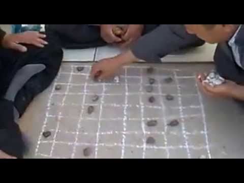

Очень
приятный и полезный материал о комбинированной деятельности!
Неоднократно замечал прилив сил и мотивации после выполнения задач,
которые развивают сразу несколько сфер жизни, причëм осознание этого,
своего рода более тщательная ретроспектива, наступило лишь после
прочтения материала. Увидев строчки о знакомых методах, почувствовал
облегчение, мол "не всë так плохо" 😅
7 Фев. 08:09
Ответить
+1
+
−
Ksy_arhangel
Для
меня сложно держать баланс, что-то проседает, что-то улучшается в ущерб
другому. Комбо - это гениально! И зачастую надо просто поменять угол
зрения ))
6 Фев. 13:07
Ответить
0
+
−
OlgaOvodova
Могу
привести пример, где я удачно совместила семью и работу. Наняла дочку
помогать мне вести блог. Мне экономия времени на рутинной работе, ей
развитие и заработок.
5 Фев. 09:01
Ответить
0
+
−
furj
Ещё
один нюанс с колесом баланса заключается в иллюзии, что значение по
каждой шкале можно выставить абсолютно любое, например, выкрутить спорт в
0. Однако это нет так. Есть сферы, где критически важно поддерживать
определенный минимальный уровень, поскольку ими продуцируются так
называемые гормоны счастья. Критический провал в одной из них не даст
полностью реализовать свой потенциал в других, а в долгосроке и вовсе
приведёт к выгоранию. Поэтому, например, у Катерины Ленгольд колесо
баланса двойное с внутренним жестким радиусом и внешней частью.
3 Фев. 10:28
Ответить
+2
+
−
Eugenia2020
Вернулась к этому дню. Ближайшие комбо: Сходила на танцы: физическое, духовное, дружеское развитие. Обсуждение Квартирника: личная жизнь, духовное, дружеское, развлечение.
И тут я поняла, что очень много моих задач, кроме чисто рабочих, достигает комбо-цели. Да
и рабочие — частенько комбо. Я делаю то, что мне нравится, привношу
новое — то, без чего не могу обходиться на новой работе (поэтому
интегрирую старое и новое, поддерживая первое и обогащая второе. То
есть, всегда достигается цель саморазвития). В общем, у меня даже
просто помыть посуду и навести порядок — комбо. Ибо я или договариваюсь с
детьми, либо не договариваюсь и принимаю свою ответственность, расту
как личность в умении наблюдать, отвечать за процессы своей жизни, быть
в Сейчас и поступать разумно, а не импульсивно/эмоционально/раня
других. И так далее, в том же духе. Абсолютно рафинированными, в
чистом виде "личная жизнь", "семья-дети" и прочие сферы (в виде дел
только для одной из сфер) у меня встречаются.... крайне редко.
31 Янв. 06:43
Ответить
+2
+
−
Unencrypted
Кажется,
это задание вызывает у меня какое-то необычайно сильное отторжение.
"Простые" задачи по совмещению двух-трёх сфер со скрипом, но мозг
согласился покомбинировать и придумал даже пару сферических идей в
вакууме, но сразу шесть... Внутренний голос кричит "НЕВОЗМОЖНО-О-О", и
заткнуть его не получается, потому что делать это задание просто как
упражнение не имеет смысла, а чтобы делать его не просто как упражнение -
нужно сначала строить колесо баланса и расходовать лишнее мыслетопливо
28 Янв. 09:53
Ответить
+3
+
−
Eugenia2020
Unencrypted, Думаю, у вас многое — комбо. Если не практически всё. Просто это стоит заметить ^.^
31 Янв. 06:44
1 ответ
Zarina Almukhanova
У
моего цветка баланса пока разные размеры листьев. Но по крайней мере
все листья на месте. Сегодня пришла мысль(вернее давно ее носила в
голове) акцент сделать на передаче своих знаний другим. Так появятся
помощники по работе, освободится время для себя, семьи, расширится круг
общения
26 Янв. 03:05
Ответить
+1
+
−
Eugenia2020
Чем дальше в лес... тем сложнее мне выполнять задания.
25 Янв. 12:31
Ответить
0
+
−
Albina-vo
У
меня колесо почти круглое и меня полностью устраивает то, что есть.
Но порой случаются и "просадки", в основном по здоровью, тогда
приходится "латать" . А некоторыми задачами я занимаюсь просто потому,
что мне это нравится: я люблю узнавать и пробовать новое. Ну и
комбинировать - наше всё, почитать или кино посмотреть - по возможности
на английском, язык заодно подтяну и т.п. Этот марафон - тоже удачный
проект: вспомнила старое, узнала новое, что-то пересмотрела, что-то
внедрила - удобнее стало, в задачах порядок навела, наметились
направления, куда "копать", в т.ч. в плане здоровья .
17 Янв. 2021
Ответить
+3
+
−
Максим Погуляев
Подумал
над комбо-целями, попредставлял теоретические проекты, а потом понял
что HYLS для меня такая комбо-цель, которая совмещает почти все аспекты)
17 Янв. 2021
Ответить
+2
+
−
AlekseyA
Ух
какой рисунок "колесо баланса". Впервые его увидел в форме цветка. Это
же жизнь, и в цветке всегда что-то меняется. Он растёт и это здорово😇.
Пусть сейчас один лепесток больше другого, но завтра будет иначе. Просто
за ним важно ухаживать и давать любовь всем направлениям. Главное не
рвать и не тянуть. Просто делать и наблюдать как все меняется🌼😍
Благодарю за "Цветок баланса"🙏. Как же мне нравится это новое
название🥰
Отредактирован
14 Янв. 2021
Ответить
+4
+
−
Константин Тютюнов
Не
знаю, к месту ли сейчас этот вопрос, но у меня с самого начала
распределения зеленых задач проблема стояла, что практически все мои
работы касаются какой-то значимой мне цели. И отрасль своей деятельности
выбирал так, чтобы была интересная и бесконечная в развитии и свою
функцию в рамках организации. С ходу набросал 10 значимых проектов,
которых касаются буквально все мои задачи. Решил на этом числе
остановиться, чтобы понять будет ли разница в отношении к задачам, если в
них будет указаны теги с этими, значимыми для меня проектами. Пока
похоже на забавную игру, но прям особой значимости задачам это не
придало. Скорее каждый раз когда выбираю ее в планировщике для
исполнения или отмечаю "сделана" - напоминает какого глобального проекта
она касается. С комбо-целями та же ерунда. Очевидно, что реализация
любого глобального личного проекта затронет несколько сфер жизни. Прямо
очевидно при их создании. Проблему вижу скорее не логическом обосновании
для себя "комбо-направленности", а в отслеживании реальности влияния,
прогресса в сферах жизни при реализации проектов. Жизненный опыт
показывает, что при реализации дел вовсе не всегда получается изначально
задуманная положительная связь. Вторая проблема, что в многоцелевых
проектах очень легко переставляются приоритетности целей в зависимости
от того, как пошел проект. Например, решил стать богатым и здоровым,
став ... фитнес-инструктором. По ходу выполнения ставишься все здоровее и
беднее. И вдруг понимаешь, что стал подменять основную цель подцелью,
которая проще достигалась. Т.е. в такой методе появляется проблема
фокуса. Надо думать как наконец начать зарабатывать в этом проекте, а
вместо этого идешь в качалку делать то, что и так прогрессирует без
особой самоорганизации.
14 Янв. 2021
Ответить
+4
+
−
labetik
У
меня это были походы ЗОЖ компанией в баню - там и "здоровье" и "дружба"
(интересная компания), когда жена подключалась еще "семья". С окунанием
в прорубь та же история - здесь еще и "личностный рост" добавляется
(преодоление страха и лени). Понравилось, как написали в комментариях
ниже - важно понять что тебе нравится и под это уже выбирать проекты и
людей, с которыми ты будешь их делать.
12 Янв. 2021
Ответить
+3
+
−
Eugenia2020
labetik,
Как это сочно и верно сказано — выбирать проекты и людей под свои
интересы и запросы. Мощное чувство избирательности и управления своей
жизнью.
25 Янв. 08:56
1 ответ
voothi
Что
делать, если комбо-задача может быть элементом нескольких разных
списков планов проектов? В большенстве инструментов есть возможность
только дублировать задачу. Или в качестве плана проекта можно
использовать тег, но тогда придется делать псевдо-иерархию через
название по типу уровень1_уровень2. Целесообразно ли это или достаточно
тега Зелёная задача?
11 Янв. 2021
Ответить
+1
+
−
Константин Тютюнов
voothi,
Не очень понятно зачем делать иерархию с тегами. У меня теги зеленого
цвета и кратко описывают цель проекта. По 2-3 тега на задачу получилось с
самого начала разделения на зеленые/другие. Пользуюсь todoist
14 Янв. 2021
Еще 6 ответов
Ellen
В
2019 у меня была потребность в работе с людьми, чтобы в этом мог
участвовать и муж, в свободном графике, общении с иностранцами
прокачивать английский + мне доставляет большой кайф узнавать людей
разных культур. И совершенно случайно мне подвернулось предложение
сдавать квартиру иностранцам от моего бывшего директора, который тоже
иностранец. Это был крутейший год, познакомилась с тревел-блогерами и
просто крэйзи пипл, которые в кругосветках не один год)) Пока не
случился локдаун и пришлось перестраиваться)) Но надеюсь это временно и я
к этому вернусь и как одна из целей это свои квартиры для сдачи
туристам. Что интересно там не было каких-то напряженных усилий, было
четкое понимание своих потребностей, а потом все стало складываться само
собой. Но вот когда я начала переживать и сомневаться, вот тогда помню
был период нервяка и оно высасывало! Важно учиться контролировать свои
мысли и эмоции и быть расслабленной в течение дня. Донт вори, би
хэппи!))
P.S.: Пока писала, почувствовала как наполняет внутри и
радость прибывает)) Значит это оно! Раньше я не обращала внимание. А все
так просто, у нас внутри камертон))) Захотелось еще раз пересмотреть
свои цели и задачи.
Отредактирован
9 Янв. 2021
Ответить
+6
+
−
tutunak
В некотором плане повезло, моя работа, а точнее сфера - мое хобби.
5 Янв. 2021
Ответить
0
+
−
MarinaBananova
Раньше
не ходила в спортзал потому что не хватало времени и с мужем провести и
туда сходить. Вытащила мужа с собой и теперь до и после тренировки
обсуждаем прогресс и коллег с работы. Как оказалось, что все можно
объединять ,а не топорно делать одно или другое. Спасибо Статье!
5 Янв. 2021
Ответить
+5
+
−
Mental
Не
зная такой методологии 4 года назад нашел для себя проект, который
закрывал все сферы жизни. Плавание на открытой воде. Поставил себе Цель
проплыть одну морскую милю на Oceanman. Закрыл спорт – начались
регулярные тренировки, улучшилась концентрация в работе, начал спокойнее
ко всему относиться. расширил круг общения – влился в тусовку таких же,
начал ездить с семьей в интересные места: поплавал, новое место
посетил, семью вывез, с пловцами пообщался. Нашел у себя в голове новые
проекты и цели в работе. Надо найти новую такую штуку теперь!
21 Дек. 08:44
Ответить
+15
+
−
Denis Samchuk
(2-е
прохождение) забавно, комбо - цели пришли в голову в мыслительном
танце. Целенаправленное размышление - перерыв - озарение под душем :))
Сначала предстояло осознать эмоциональные потребности: ощущение дружбы и
соратничества, приключения, быть первым и реализовывать свою мечту.
Посетить несколько бизнес клубов - познакомиться с ребятами увеличивает
шансы закрытия потребностей И я понял, что продолжу вести блог в инсте,
чтобы рассказать свою историю (и снова же ковром закрываются
потребности). И шансы соратников найти, и своей истории ты всегда
первый, и интересные знакомства предстоят, и может соратников найду, и к
реализации мечты ближе. К-ККККОМБО.
16 Дек. 22:50
Ответить
+6
+
−
Максим Дорофеев
Denis Samchuk,
Прекрасно! :) Целенаправленное размышление -> перерыв -> озарение
:) Очень похоже не слаженную работу сознательного и бессознательного :)
Можно еще попробовать после целенаправленного размышления пойти в
расслаблячку ;)
21 Дек. 17:52
Еще 1 ответ
Menshovam
Я
подумала и получается, тут надо понимать какие ценности ты хочешь
транслировать, реализовать в жизни. И уже под эти ценности подбирать
проекты :) Например, есть фундаментальная ценность свободы. Как она
может реализоваться? На физическом уровне: это свобода тела (развиваем
свои возможности). На уровне интеллектуальном: свобода выражать свои
мысли и идеи (значит нужно организовать свой проект или искать проект,
где именно ваши идеи будут востребованы). Или эта свобода может
выражаться в свободном общении на иностранном языке. Все мы разные. На
уровне пространства это может свобода выбрать место жительства или ту
квартиру (дом), которую хочется. И это уже проект переезда или
увеличения фин. достатка. И т.д. Мое предположение, что если никак не
объединить проекты, то найти ценность, которая транслируется через
проекты. Тогда уже не так важно что за проекты, главное чтобы ценность
наилучшим образом реализовалась.
16 Дек. 14:20
Ответить
+10
+
−
Denis Samchuk
Menshovam,
БИНГО! "не так важно что за проекты, главное чтобы ценность наилучшим
образом реализовалась" - по моему суперски жизнеутверждающее
предложение.
16 Дек. 22:53
Еще 2 ответа
Vlad_Ushakov
прочитал
материал. не понял, прочитал ещё раз и комментарии, а потом кааак
понял. но кажется, чтобы понять суть задач (проблем) которые мы решаем,
не обойтись без взгляда во внутрь себя (тут куча инсутментов от
стадндратной псизологии до эзотерики)
13 Дек. 21:35
Ответить
+1
+
−
Denis Samchuk
Vlad_Ushakov,
а "потомм каааааак понял" ))))) если взглянуть внутрь себя означает
прикоснуться к своиму сердцу (чувствам, эмоциям), что важно, тогда я
тоже так думаю.
Отредактирован
16 Дек. 22:54
1 ответ
Vlad_Ushakov
что-то
как-то печально, похоже, надо восстанавливать энергию. ушли времена,
когда после тяжелого дня на работе, можно было сходить на свидание с
девушкйо а ночью ещё покорпеть над своими задумками. везде проседают
> Насколько у вас получается удерживать баланс между всеми сферами жизни? Получается так себе. Есть сильные перекосы
> Какие сферы обычно проседают? Карьера, отдых и окружение (очень мало общения с друзьями / коллегами / клиентами)
> Можете привести пример из своего опыта, когда один проект или задача сразу закрывали несколько сфер жизни? Медитации
и йога: улучшает здоровье (физическое и психическое) и самочувствие,
сглаживает отношения в семье и не только, убирает суету в рабочих
вопросах и повышает в ней эффективность, повышает настроение и
удовольствие от жизни, восполняет мыслетопливо :)
8 Дек. 18:37
Ответить
+3
+
−
Denis Samchuk
Patrick Star, Запасал себе попробовать вариантов 3-5 медитаций
16 Дек. 23:08
1 ответ
ignat.markin
убить двух зайцев одним выстрелом - старо как мир! :)
4 Дек. 22:58
Ответить
+3
+
−
Serg O
ignat.markin, Старые приёмы самые надёжные. Гвозди до сих пор молотком забивают, а Гайки - ключами.
4 Дек. 23:51
Еще 2 ответа
ignat.markin
"И мы просто фокусируемся на нем одном одном." :)))
Мое
любимое комбо - танцы как объединение спорта, искусства и общения)))
Часто бессознательно стремлюсь находить занятия, относящиеся к
нескольким сферам. В качестве "круга баланса" по рекомендации психолога
использую круг ресурсов от evo_lutio. Он сложнее, но подразумевает
классификацию (например, что в земных ресурсах - здоровье, работа,
экономика - важнее воля, а не спонтанность) и зависимость друг от друга
(какие пары развивать лучше одновременно).
2 Дек. 22:55
Ответить
+2
+
−
Denis Samchuk
liubov.nelapa, Танцы! Ох, спасибо, что напомнили хотел же попробовать!
16 Дек. 23:09
1 ответ
Игорь Толстов
Можно
объединить изучения Англ языка, отдыха и время семье, если в месте с
детьми играть в игрушку где много общения на английском =)
2 Дек. 16:02
Ответить
+2
+
−
Людмила Бердникова
Мне
кажется, что почти любая зелёная задача улучшает несколько сфер
жизни, если проанализировать это. Моё хобби – вышивка и рисование картин
охватывают несколько сфер жизни: отдых, хобби, здоровье( снимают стресс
и благотворно влияют на зрение), отношения( друзья по интересам) и даже
финансы ( подарки получаются интересные и оригинальные), дом ( интерьер
в квартире), личностный рост (проявление творчества).
1 Дек. 23:39
Ответить
+6
+
−
krakaz238
Очень
интересная практика. Оказалось, что у меня в зеленых стоят задачи,
которые охватывают максимум 3 сферы. Часто 1 или 2. Поразмыслив что же
такого можно делать, что бы все сферы охватить, пришел к странным
результатам. Нужно водить IT-шников в походы и там делать им тренинги.
Странная идея, включает в себя кучу трудностей. Водить куда-то
интровертов, да еще и как-то мотивировать на взаимодействие друг с
другом. При этом можно брать с собой семьи и нужно придумать занятие для
семей, что бы они не мешали IT-шникам проходить тренинг на свежем
воздухе. Но это, пожалуй, единственная идея проекта, которая охватывает
все сферы из представленного колеса. Очень интересно.
Мне
тема показалась интересной, но не простой. Навешать ярлыки на свои
задачи (а это я то, и это, и еще то) не кажется делом сложным при
пониженной планке. В реальности все сложнее. Если говорить не о
галочках, то прогресс может быть только при преодолении, при взятии
барьера, а не при беге трусцой. А это требует концентрации. Совершенно
точно, у всех разные барьеры. Иногда просто выйти на пробежку - уже
достижение.
29 Ноя. 05:06
Ответить
0
+
−
Юлия
Я
не понимаю, как пользоваться колесом баланса. Во-первых, там какие-то
сферы всегда под общую гребёнку, я не понимаю, как мои хотелки по ним
распределять. Во-вторых, в некоторых сферах у меня очень мало, но я не
хочу там ничего увеличивать. Мне там что рисовать, 0 или 100%? Мне
кажется, эта техника очень сильно провоцирует на сравнивание себя с
какими-то стереотипами успешного успеха.
28 Ноя. 19:13
Ответить
+7
+
−
Максим Дорофеев
Юлия, Я тоже этим инструментом пользоваться не умею ;)
30 Ноя. 16:29
Еще 2 ответа
Вячеслав Ивченко
Согласен
с авторами статьи. Можно за ботву вытащить целую репку: и дедка и бабка
и жучка и кошка и мышка. Любая задача это общая задача в нашей жизни.
Да она поможет достигнуть конкретной цели, но и все остальные цели будут
приближены и задел будет общий. Согласен с авторами на все 100%
28 Ноя. 15:13
Ответить
0
+
−
Ирина Коновалова
Это тема идеальна после просмотра последнего стрима. Пазл в голове сложился.
21 Ноя. 22:41
Ответить
+2
+
−
K_Irina
Ирина Коновалова,
Согласна, начинаешь явно видеть, что можно объединить и попробовать
реализовать. А стоило только посидеть немного и подумать. :)
23 Ноя. 17:14
Еще 1 ответ
angelparechina
А
что если в список задач добавлять проекты с названиями сфер жизни и
периодически отсматиривать какие дела есть по проектам и сколько их?
Интересно, показательно будет пронаблюдать за собой таким образом...
21 Ноя. 12:10
Ответить
+2
+
−
Ильдар
angelparechina, Это скорее уровень над проектами, но идея отличная
Отредактирован
21 Ноя. 14:38
Еще 1 ответ
e_guruleva_lexfort
Прикольная задача. Первый раз вижу такую идею в книге по самосовершенствованию) Не попробовать нельзя)
20 Ноя. 18:13
Ответить
+3
+
−
vit312
Очень
классный материал. "можете ли вы представить" и такие комбинации
которые сходу представляются. Самое забавное, что часть задач уже
подтягивает несколько сфер, просто ты этого не замечаешь. А когда
заметил начинаешь получать большее удовлетворение от их завершения "на
ровном месте".
20 Ноя. 15:45
Ответить
+3
+
−
Лена Трелина
Максим,
эта тема - откровение для меня! Я некоторое время назад начала
интуитивно понимать, что задача может относиться к нескольким проектам.
И, конечно, совмещала некоторые дела 2 в 1. Но то, что это можно так
эффективно использовать для достижения успехов одновременно в нескольких
сферах жизни, я не осознавала. Спасибо от всей души за этот урок! Вы
каждый день делаете мою жизнь лучше!
19 Ноя. 20:20
Ответить
+5
+
−
Serega Pozitiv
Создал
соответствующие ярлыки у себя в программке (семья, деньги, хобби и
т.д.). В каждой задаче решил отметить те ярлыки, для чего бы эта задача
оказалось полезной. Получилось в основном отмечать пару пунктов, редко
когда только одна, но и более двух тоже не очень часто. Получается как
на скрине.
Уже
совмещаю тренажерку + личностный рост (наушники и какие-нибудь лекции в
процессе). Путешествия + семья + личностный рост (часто уезжаем на
какое нибудь тематическое мероприятие все вместе). Работа + хобби +
бизнес (начал изучать кордову для создания мобильных приложений, нужно
как для работы, так и для личного проекта). По времени все это более
менее объединено, но нехватка мыслетоплива порой всё равно очень сильно
чувствуется. Вечером работать над личным проектом с пустой головой очень
сложно, при этом я не залипаю в ютубе, я могу залипнуть глядя в пустой
экран.
19 Ноя. 09:31
Ответить
+3
+
−
mac
seregapositiv, Я выкручиваюсь так: штуки по типу кордовы (стратежнее flutter взять) и прочие приколюхи - с утра до работы
это моя зеленка, как раз закрывает "начать день с зеленой задачи"
проекты тронулись с места
вечером когда уставший - не мучу себя и развлекуха - там конструктор собрать, поиграть, порисовать с детьми и вот это все
в коем то веке даже книгу сделаную из дерева в руки взял почитать :)
когда прям совсем уставший - не стесняясь залипаю в сериалы или типа того "день овоща"
25 Ноя. 11:42
Еще 13 ответов
Alua
Я
стараюсь заниматься спортом и саморазвитием вместе с мужем и детьми. 2 в
одном так сказать. Вместе ходим на плавание и йогу. С детьми готовим
сообщения на интересные для него темы. Потом делимся между собой,
обсуждаем. Планируем вместе.
18 Ноя. 14:46
Ответить
+4
+
−
Татьяна Лебедева
первый
раз вижу такую красивую схему колеса баланса) ну, я разве пытаюсь
объединить хобби с бизнесом, а также с собственной потребностью иметь
ухоженный и грамотно спроектированный сад.
18 Ноя. 12:01
Ответить
+4
+
−
Дмитрий Рузанов
Если
говорить о конкретике - из не совсем обычного совмещения: научил
супругу, теперь со мной рыбачит); учу англ по Гарри Поттеру; готовка как
хобби + зожная кухня для здоровья; супруга и настолки...
17 Ноя. 22:36
Ответить
+9
+
−
ivan.steelmah
Дмитрий Рузанов, "Научил супругу рыбачить" - вообще высший пилотаж! )))
19 Ноя. 17:11
1 ответ
Дмитрий Рузанов
я
думаю, что интуитивно каждый при планировании задач и целей совмещал и
совмещает 2-3 сферы (отдых с друзьями; спорт со второй половинкой;
развитие и работу). Чуть больше? мне кажется, что в этом случае или
некая искусственная подгонка будет (отказ от прежних целей, их
трансформация) или повезло и звезды совпали - и так все совместится
(например, отдых для здоровья, там же друзья и семья, а еще рыбалка и
гитара как хобби и все это здоровье на свежем воздухе). Но некоторые
вещи вообще совмещать опасно (например, семью и работу, т.е. вести
совместный бизнес). Еще важно не забывать про то, что навык развивается
там, где он тренируется. Если хочешь развить навык переговорщика, то с
друзьями его бессмысленно тренировать - только на работе.
17 Ноя. 22:13
Ответить
+1
+
−
stepanovasofia1990
Звучит
как нечто сложное, но если разобраться то почти всё можнот соединить в
пары, интересно послушать титанов Ккомбо как замешать 5 и более сфер
жизни)
17 Ноя. 10:06
Ответить
+2
+
−
anton23.pochta
такое
чувство, что мое сознание, понимание, мировоззрение в какой-то степени
выхлопали или как это правильно сказать встряхнули как белье перед
сушкой, или как залежавшуюся в пыли вещь. Вот это задание! сложное не на
шутку, а-ля все задачи одного цвета в день в настолке джедайские
техники. Никогда не задумывался о таких комбах непосредственно,
конкретно, подсознательно понимал, что когда играю в баскетбол, что это и
спорт, и здоровье, и друзья, общение и воспитание (оттачивание)
характера. Хм...очень интересно. Нужно подумать и об других сферах жизни
с таким подходом. Это конечно, уже другой уровень джедая, когда идет
рассуждения о таких темах, задачах, то утро без смартфона, вечер без
экранов воспринимается как само собой разумеющееся. Сколько же впереди
работы
В
копилку к вышенаписанному, предлагаю такую штуку - задавать себе вопрос
"А как это мне поможет в других областях?". Например, "как спорт
поможет в работе/в отношениях/ в творчестве"? И рассказывать себе, что
"повышу свой тонус, снижу стресс, что поможет в работе, стану красивей и
здоровей, что круто для отношений, освою филигранную технику или
какой-то трюк, что прибавка к творчеству"... И так далее, т.е. реально
не думать про то, как что-то одно утаскивает ресурсы от прочего, а про
то, какой вклад оно даст в общую копилку.
15 Ноя. 09:23

Ответить
+3
+
−
Юлия
Николай Емельянчук,
Мне кажется, велик шанс рационализировать что-то нерелевантное) Я вот
себе рассказываю, что языки учу от альцгеймера, но это скорее отмазка)))
28 Ноя. 19:20
1 ответ
medvejonok07
Есть в этом что-то. Пока не подумаешь, не попробуешь - точно ничего не получится.
15 Ноя. 05:01
Ответить
+1
+
−
ivan.steelmah
medvejonok07,
тут иногда и по другому всплывает: оказывается - уже есть эти связи
между сферами и только надо было чуть-чуть обратить внимание и уже
осознанно улучшить и усилить.
19 Ноя. 17:09
1 ответ
Маргарита Вау
Должна
сказать, что по прошлому материалу - у меня много (пипец много
кубиков), но и много задач (каждый день 30-60) - это за гранью
разумного. И у меня почти НЕ бывает выстрела, который удовлетворяет
только одну задачу. И.к. Я переношу задачи из МакДоне в Сингуларити -20
минут (это задача такая) и в этаже дни - «подумать хочу ли маску» - т.е.
сижу с маской запертая в кабинете и переношу задачи из старой проги в
новую. НО, как профи в «многозадачности» скажу - ОБЯЗАТЕЛЬНО нужно раз
в пару недель делать дела единичные - иначе они накапливаются и мешают
всей системе. И надо СЛЫШАТЬ себя- иногда нужен перерыв или забота о
себе - иначе в мире многозадачности погибнешь
Отредактирован
14 Ноя. 21:52
Ответить
+2
+
−
Vladimir Stekolshchikov
Маргарита Вау,
Мне кажется материал не про многозадачность ( насколько могу судить в
очень многих случаях это зло), и даже скорее призывает задуматься про
отказ от многопроектности, фокусируясь на одном проекте, но который
затрагивает в пределе все сферы жизни.
15 Ноя. 11:42
Еще 1 ответ
Алексей Теперев
Единственное,
что пока что пришло мне в голову касательно этого задания - это
ежевечерние прогулки перед сном с супругой (без смартфонов, аудиокниг и
прочей электроники). Это и для здоровья полезно, и общение с супругой
будет больше, и может улучшить сон, а значит я буду более продуктивен и
эффективен в работе и зарабатывании денег. Плюс, буду лучше воспринимать
учебные материалы, которые помогут мне в саморазвитии. Но больше ничего
за два дня придумать не смог.
Отредактирован
14 Ноя. 17:23
Ответить
+7
+
−
alex.blednov
Материал
- агонь. Думаю, что вся сложность по его применению связана с условиями
в которых мы живём. Мы ограничены не то только нашими собственными
представлениями о жизни. Но все равно это круто.
Ближайшие комбо:
Сходила на танцы: физическое, духовное, дружеское развитие.
Обсуждение Квартирника: личная жизнь, духовное, дружеское, развлечение.
И тут я поняла, что очень много моих задач, кроме чисто рабочих, достигает комбо-цели.
Да и рабочие — частенько комбо. Я делаю то, что мне нравится, привношу новое — то, без чего не могу обходиться на новой работе (поэтому интегрирую старое и новое, поддерживая первое и обогащая второе. То есть, всегда достигается цель саморазвития).
В общем, у меня даже просто помыть посуду и навести порядок — комбо. Ибо я или договариваюсь с детьми, либо не договариваюсь и принимаю свою ответственность, расту как личность в умении наблюдать, отвечать за процессы своей жизни, быть в Сейчас и поступать разумно, а не импульсивно/эмоционально/раня других.
И так далее, в том же духе.
Абсолютно рафинированными, в чистом виде "личная жизнь", "семья-дети" и прочие сферы (в виде дел только для одной из сфер) у меня встречаются.... крайне редко.
P.S.: Пока писала, почувствовала как наполняет внутри и радость прибывает)) Значит это оно! Раньше я не обращала внимание. А все так просто, у нас внутри камертон))) Захотелось еще раз пересмотреть свои цели и задачи.
Получается так себе. Есть сильные перекосы
> Какие сферы обычно проседают?
Карьера, отдых и окружение (очень мало общения с друзьями / коллегами / клиентами)
> Можете привести пример из своего опыта, когда один проект или задача сразу закрывали несколько сфер жизни?
Медитации и йога: улучшает здоровье (физическое и психическое) и самочувствие, сглаживает отношения в семье и не только, убирает суету в рабочих вопросах и повышает в ней эффективность, повышает настроение и удовольствие от жизни, восполняет мыслетопливо :)
Согласен с авторами на все 100%
это моя зеленка, как раз закрывает "начать день с зеленой задачи"
проекты тронулись с места
вечером когда уставший - не мучу себя и развлекуха - там конструктор собрать, поиграть, порисовать с детьми и вот это все
в коем то веке даже книгу сделаную из дерева в руки взял почитать :)
когда прям совсем уставший - не стесняясь залипаю в сериалы или типа того "день овоща"
https://youtu.be/tgxAQwX0PJw
В копилку к вышенаписанному, предлагаю такую штуку - задавать себе вопрос "А как это мне поможет в других областях?". Например, "как спорт поможет в работе/в отношениях/ в творчестве"? И рассказывать себе, что "повышу свой тонус, снижу стресс, что поможет в работе, стану красивей и здоровей, что круто для отношений, освою филигранную технику или какой-то трюк, что прибавка к творчеству"... И так далее, т.е. реально не думать про то, как что-то одно утаскивает ресурсы от прочего, а про то, какой вклад оно даст в общую копилку.